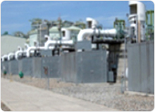
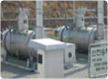
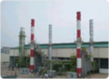
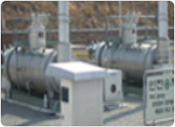
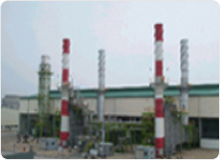
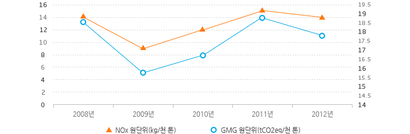

환경오염저감활동
대기오염
KOGAS의 생산ㆍ공급시설 중 대기오염물질을 배출하는 주요설비로는 연소식기화기(SMV)와 가스히터, 열병합발전설비, 보일러, 냉난방기 등이 있습니다. KOGAS는 이들설비의 오염물질 배출을 최소화하여 운영하고 있습니다.
배출되는 주요 오염물질에는 NOx, CO 등이 있습니다. 열병합발전설비는 국내 대기환경 기준인 150ppm의 1/2인 75ppm 이내로 운영하고 있으며, NOx 농도 및 유량치 등은 굴뚝(Stack)에 설치된 TMS(Tele-Monitoring System)에 의해 실시간으로 감시 통제되고 있습니다.

연소식 기화기
가스히터
열병합 발전설비
연소식 기화기
가스히터
열병합 발전설비
온실가스 배출량 및 원단위
| 구분 | 2008 | 2009 | 2010년 | 2011년 | 2012년 |
|---|---|---|---|---|---|
| 천연가스 판매량(천 톤) | 26,345 | 24,644 | 31,202 | 33,570 | 36,547 |
| 배출량(tCO2eq) | 491,432 | 390,295 | 524,894 | 622,750 | 650,862 |
| 원단위(tCO2eq/천 톤) | 18.65 | 15.8 | 16.8 | 18.85 | 17.81 |
자체 인식 가능한 수준에서의 산정량이며 IPCC_GL 1996의 배출계수를 활용하여 산정함.
Nox 배출량 및 원단위
| 구분 | 2008 | 2009 | 2010년 | 2011년 | 2012년 |
|---|---|---|---|---|---|
| NOx 배출량(kg) | 371,820 | 235,175 | 379,612 | 499,111 | 513,544 |
| 천연가스 판매량(천 톤) | 26,345 | 24,644 | 31,202 | 33,570 | 36,547 |
| 원단위(kg/천 톤) | 14.1 | 9.54 | 12.16 | 14.87 | 14.05 |
온실가스 및 Nox 배출량 및 원단위

| 구분 | 2008 | 2009 | 2010 | 2011 | 2012 |
|---|---|---|---|---|---|
| GMG 원단위(tCO2eq/천 톤) | 18.65 | 15.8 | 16.8 | 18.85 | 17.81 |
| NOx 배출량원단위 (kg/천톤) | 371,820 | 235,175 | 379,612 | 499,111 | 513,544 |